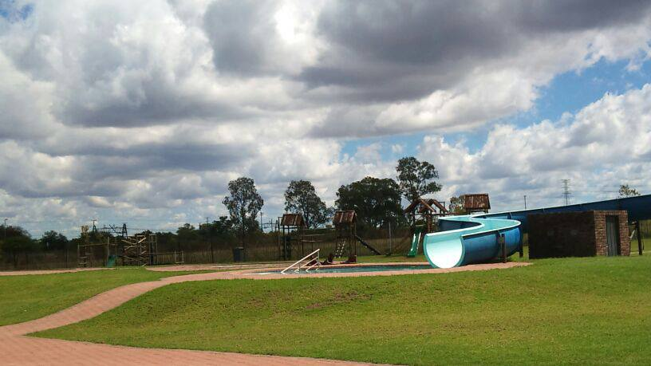

Recreation
Klip-Kruisfontein Resort
Klip-Kruisfontein Resort is an outstanding resort located in Soshanguve. It is well known for the beautiful open park that contains three pools of different sizes, with a slide that accommodates both adults and children. The resort has facilities for Saturday pinics with family and Sunday ‘chillas’ with friends. The annual Tshwane Festival and the Soshanguve Braai Fest are events to look forward to and that connect South Africans through music, dance and good food. Tshwane free Wi-Fi is always available for quick updates and staying connected.
- Swimming pools
- Kids' swimming pool
- Adult swimming pool with slide
- Braai Area
- Jungle Gym